Смеси для мяса
 Болонская смесь
Болонская смесь
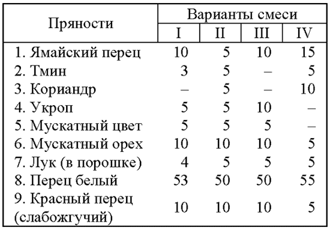
Франкфуртская смесь
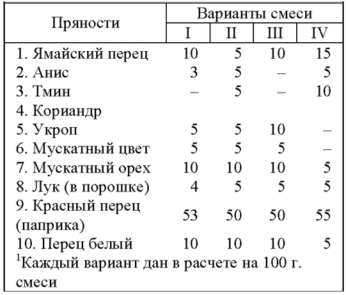
Гамбургская смесь
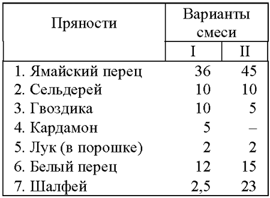
Уорчестерская смесь
Перечисленные смеси используют для приготовления соответствующих соусов, в которые добавляют мясной бульон, муку, соль, сахар, вино или винный уксус. Эти соусы и смеси применяют главным образом в ресторанной кухне. В домашнем быту пользуются более простыми комбинациями.
Для некоторых специфических видов мяса (свинина, домашняя птица) в Западной Европе и США имеются особые наборы пряностей в разных вариантах.
Смесь для сдабривания свинины и изделий из нее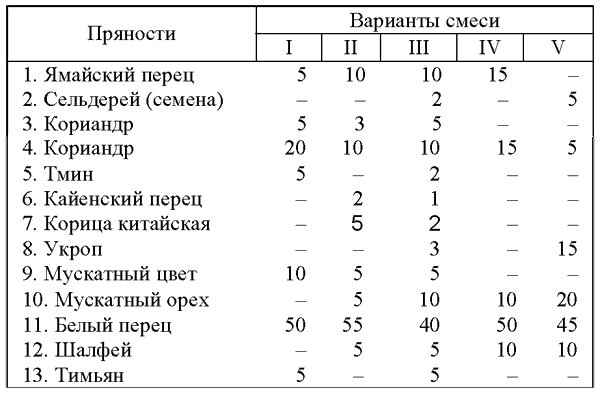
Смесь для тушения, томления, жарения или сдабривания вареной птицы
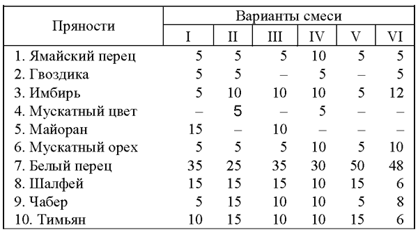
Смесь для сдабривания начинок из ливера, мяса для приготовления паштетов, домашних колбас и т. п.
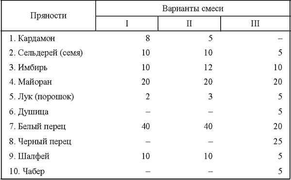
Во французской, бельгийской, датской, шведской и голландской кухнях широко используются готовые смеси пряных трав для заправки супов — в основном мясных и овощных. Эти смеси носят общее название «букетов гарни» и могут быть весьма разнообразными по составу, что дает возможность значительно разнообразить одну и ту же основу супов, например мясных, овощных, грибных.
Смеси для овощных, мясных супов и супов с сыром (в граммах)
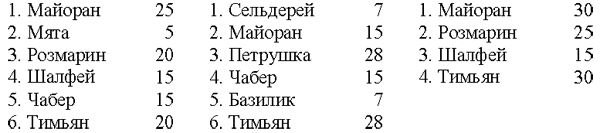
Эти смеси составляют из порошка, и предназначены они обычно для длительного хранения, на зиму. Применяют их так: по одной чайной ложке смеси кладут на кастрюлю супа (в расчете на 4 порции) непосредственно за 2—3 минуты до готовности, причем одновременно в суп вносят около 1 чайной ложки мелконакрошенного свежего чеснока и супу после выключения огня дают постоять 3— 4 минуты для «настаивания»,
Однако более употребительны различные национальные составы «букетов гарни» из свежих или сухих целых (не молотых) пряностей, которые опускают в суп либо на ниточке, либо в специальном марлевом мешочке за 5 минут до готовности, а затем вынимают перед подачей супа на стол. Ниже даны различные составы «букетов гарни» (в расчете на четыре порции);
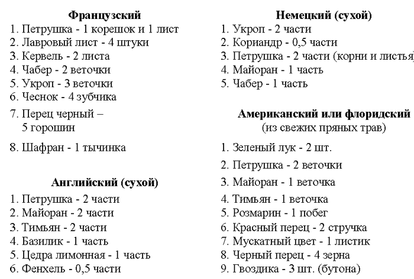
Особое место среди пряных смесей занимают смеси для рыбы. Приведем рецепты смеси для рыбных супов, отварной и тушеной рыбы, для маринования или посола рыбы.
Смесь для отварной, тушеной рыбы и рыбных фаршей
Смесь для маринования или пряного посола рыбы в (граммах)
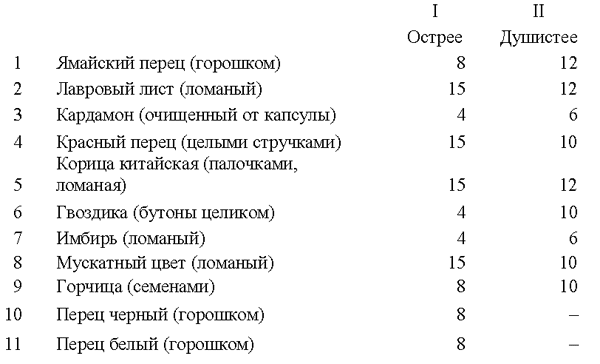
Широкое распространение в странах Европы и Америки получили многие фирменные составы пряных смесей. Таковы составы смесей для солений и маринадов, для фаршей и начинок, для паштетов и студней.
Смесь для маринадов (мясных, овощных, грибных)
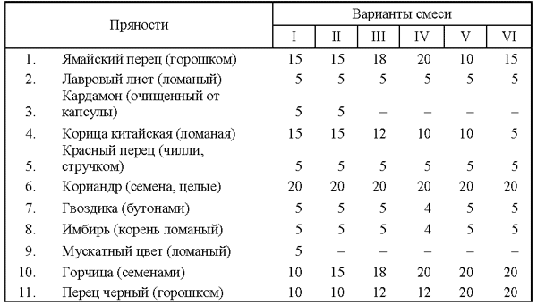
Обычно к этому составу сухих пряностей добавляют свежий укроп — 6—8 стеблей зрелого растения (с зонтиком) на 100 граммов сухой пряной смеси, либо 2 ст. ложки семян укропа или тмина, или того и другого по 1 ст. ложке (без горки).
Смеси для фаршей (мясных, свиных, колбасных) и начинок Смеси из классических пряностей (зимние)
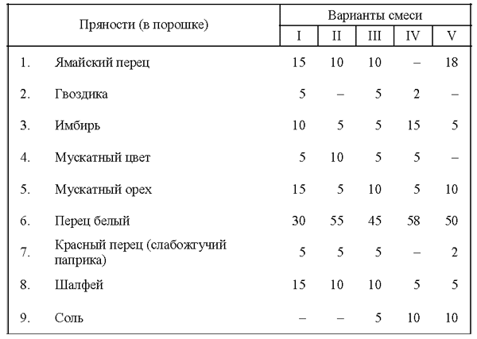
Смеси преимущественно из европейских пряностей (летние)
Смесь для студня — суррибе (на 1 килограмм мяса)
Пряную смесь варят в солено-сладком мясном бульоне, в процессе варки добавляют натуральный лимонный сок.
Кроме вышеназванных смесей существует множество комбинаций, предназначенных для строго определенного блюда или рода пищи, например только для гороховых, картофельных, рисовых, куриных блюд, отдельно для баранины, свинины, яиц и пр.
Такого рода смеси, заготовленные заранее или изготовленные на предприятиях пищевой промышленности, можно употреблять каждый раз в уже готовое блюдо или непосредственно вводить в него перед готовностью и тем самым значительно ускорять или сокращать сроки приготовления пищи.
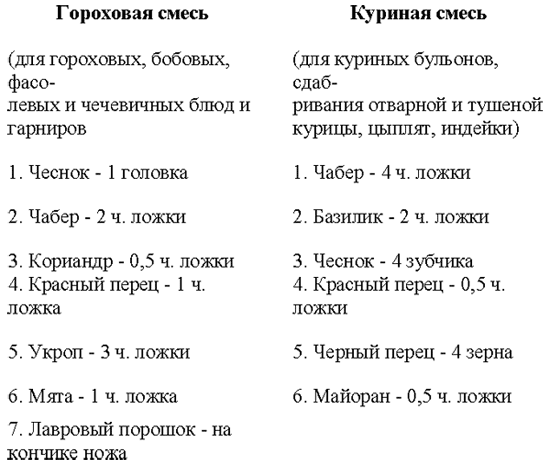
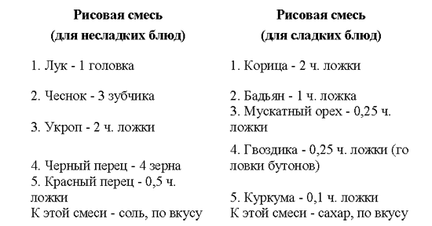
Такие смеси заготавливают в указанных пропорциях, увеличенных в любое число раз, причем каждую пряность растирают в порошок и затем смешивают с остальными. Пользование полученным порошком смеси просто: берут потребное в каждом данном случае количество и вводят в соответствующее блюдо за 1 минуту до готовности или сразу в момент готовности, после чего дают постоять 2-3 минуты. Обычно на 3—4 порции достаточно 1 чайной ложки любой смеси. Лук и чеснок, употребляемые в свежем виде, обычно мелко крошат; при употреблении же порошка лука и чеснока 1 головку заменяют 1,5 чайной ложки.
Перейдем теперь к смесям, предназначенным для сладких блюд: кондитерских изделий, творожных паст, компотов, желе, киселей, пудингов и др. Эти смеси известны под собирательным названием «сухие духи», которые могут быть разных составов. «Сухие духи» издавна применялись в России при выпечке куличей, пряников, изготовлении сбитней, квасов, пасх, а в Западной Европе—при изготовлении кексов, муссов, печений.
1. Пряничные смеси (в чайных ложках)
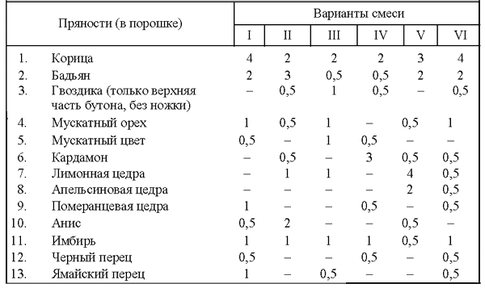
1—2 чайные ложки такой смеси добавляют к 0,5—1 килограмма пряничного теста.
2. Кондитерские смеси (английские, французские, немецкие)
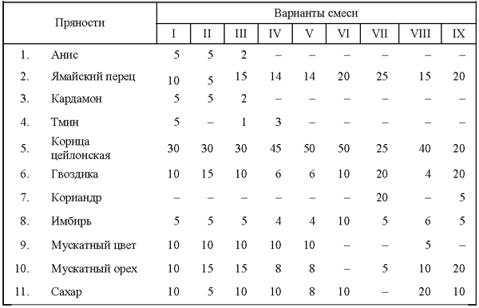
Большинство кондитерских смесей может быть использовано не только в тесто, но и в творожные пасты. При этом рекомендуется заменять в них перец на мяту, мелиссу или цедру.
В противоположность европейским кондитерским изделиям восточные сладости изготавливают без применения сложных пряных смесей; в них чаще всего применяют одну, максимум две пряности, причем излюбленную в Европе ваниль на Востоке вовсе не применяют.
Нет возможности перечислить все виды смесей пряностей, да в этом и нет необходимости. Зная основные, наиболее распространенные смеси и понимая принципы их составления, можно видоизменять основные смеси, приспосабливая их как к своим индивидуальным вкусам, так и к имеющимся в наличии продуктам, к отдельным блюдам. Следует лишь помнить, что смеси, как и отдельные пряности, вовсе не обязательно употреблять только с тем или иным традиционным блюдом — они могут сочетаться с любым или почти с любым пищевым продуктом (исключением является, например, гречневая каша, которая не выносит никакого сдабривания пряностями, кроме лука). Смеси пряностей значительно упрощают и ускоряют приготовление различных блюд и, главное, дают возможность широко разнообразить ежедневную пищу.